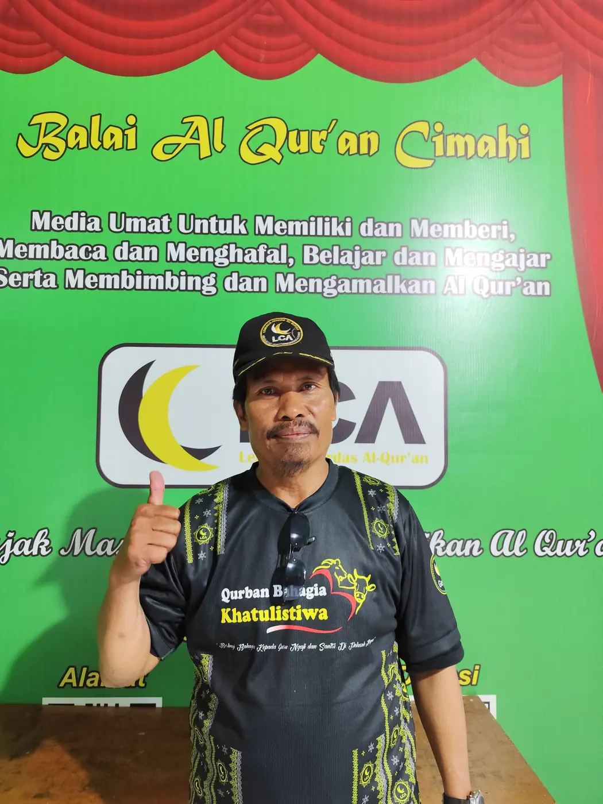
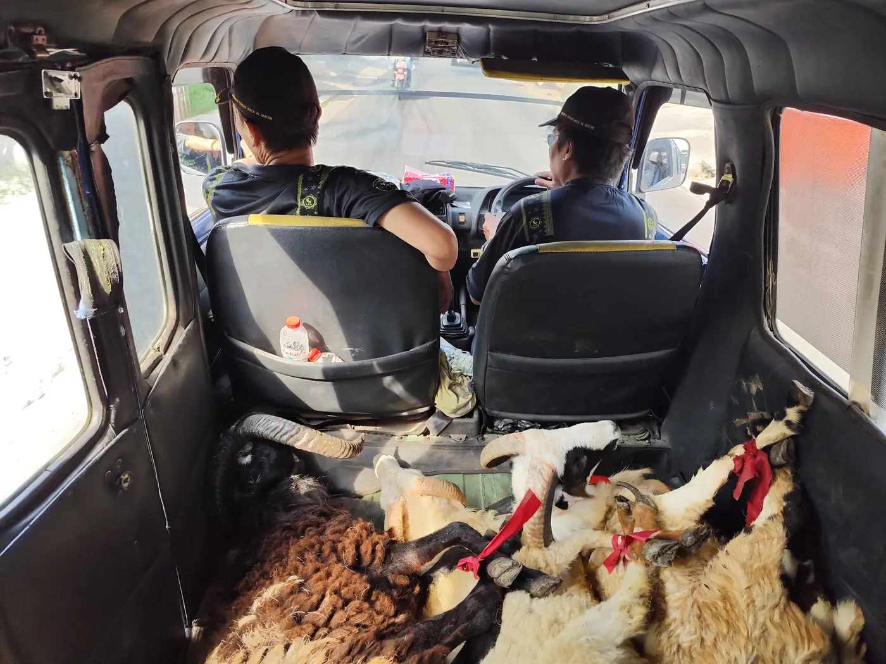
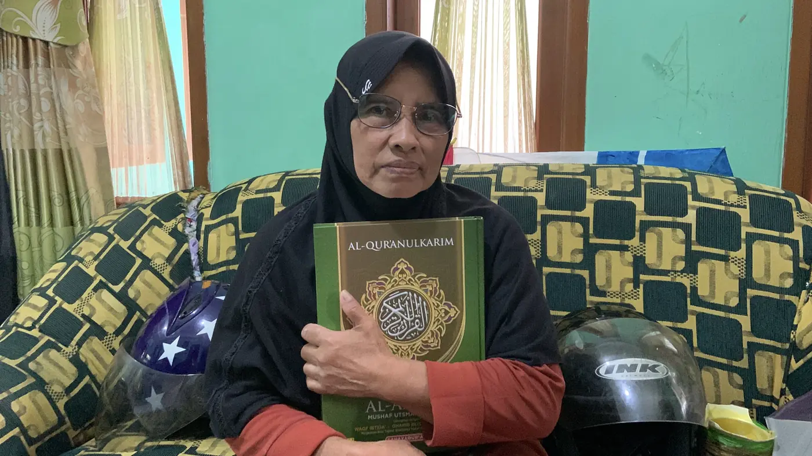
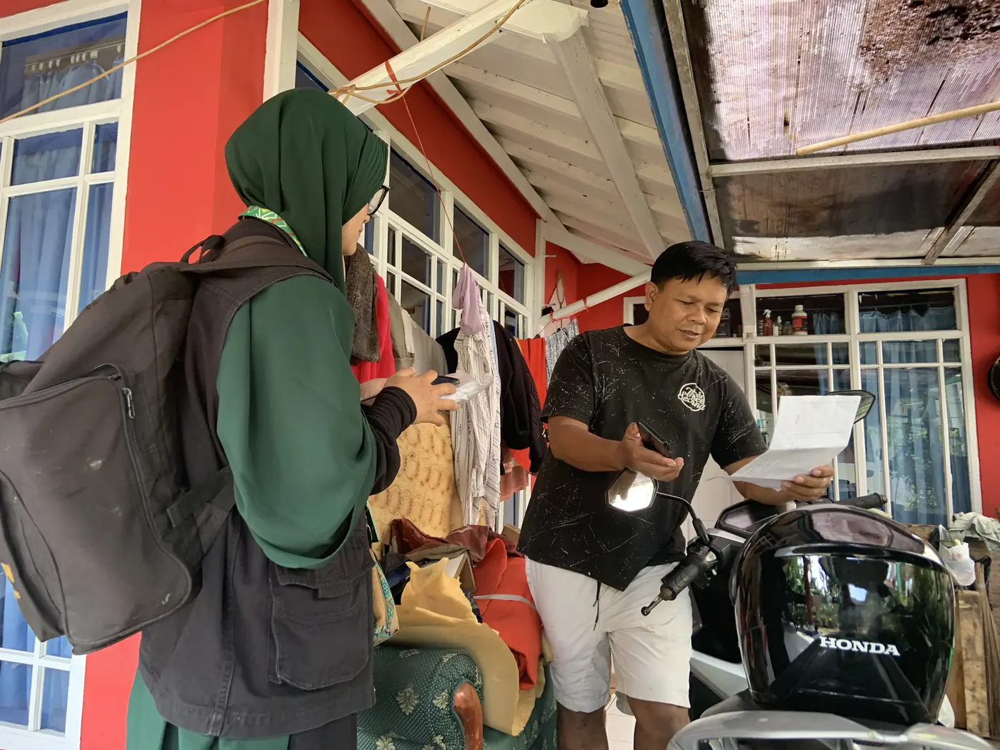
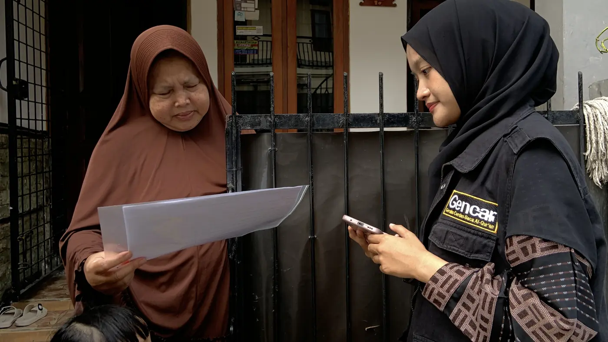
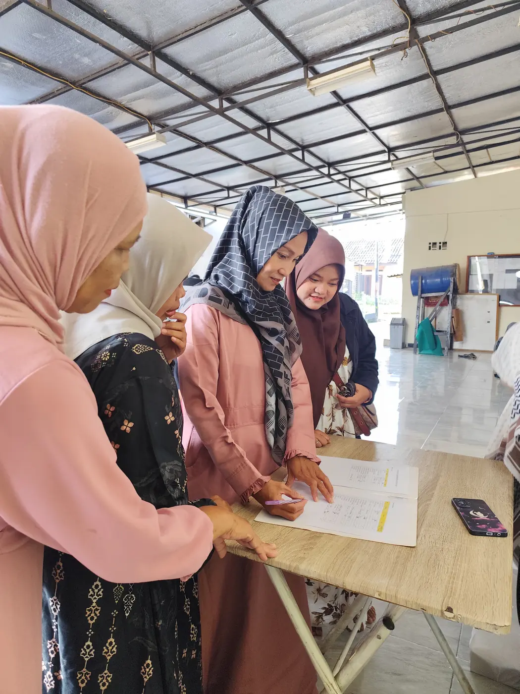

وَإِنَّهُ لَذِكْرٌ لَكَ وَلِقَوْمِكَ ۖ وَسَوْفَ تُسْأَلُونَ"Dan sungguh Al-Qur'an itu benar-benar peringatan bagimu dan bagi kaummu, dan kelak kamu akan dimintai pertanggungjawaban." (QS. Az-Zukhruf: 44)
85desa/kelurahan tergarap di Bandung Raya
48.726KK tersensus (kumulatif)
12.853mushaf diwakafkan (kumulatif)
5.671santri belajar gratis (kumulatif)
612guru ngaji dibina (kumulatif)
Angka kumulatif per Juni 2026, sebagaimana dilaporkan di situs donasi GENCAR. Wilayah garapan per Agustus 2026 dari Laporan Sekretariat.
Ikuti LCA di media sosial
Kajian, murattal, dan kabar sensus setiap pekan. Ketuk ikon untuk langsung membuka.
pertemuan belajar (KBM) dalam sebulan, naik 14% dari Juli.
Agustus 2026
376
majelis aktif di tiga kantor, naik 9% dari Juli.
Agustus 2026
12.660
donatur Tafaqur yang dikunjungi petugas setiap bulan.
Juni–Sep 2026
3.606 KK
tersensus dalam Sensus Reborn Desa Tanimulya.
Tentang LCA
Berawal dari satu desa, kini 85 desa
Kiprah Lembaga Cerdas Al-Qur'an dimulai dengan menggelar GENCAR Cilame pada akhir tahun 2007. Desa Cilame, Kecamatan Ngamprah, Bandung Barat, menjadi proyek percontohan sensus Al-Qur'an dengan target 15 ribu responden di 25 RW.
LCA berada di bawah Yayasan Al-Kalam. Kami bukan lembaga yang menunggu umat datang ke masjid. Kami mendatangi rumah demi rumah, menanyakan apakah keluarga itu punya mushaf, apakah bisa membaca, dan apakah rutin tadarus. Dari jawaban itulah layanan kami bergerak: mushaf diantar, guru ngaji dikirim, dan motivasi diberikan.
2007
GENCAR Cilame
Sensus Al-Qur'an pertama di Desa Cilame, Ngamprah, Bandung Barat, dengan target 15 ribu responden di 25 RW.
2012
Yayasan Al-Kalam terdaftar
Badan hukum yayasan disahkan Kemenkumham.
2014
Lima departemen, 15 program
Kantor Pusat berjalan dengan Departemen Sensus, Pendidikan, Tafaqur, Wakaf, dan Kiprah Muslimah, menjalankan 15 program GENCAR dan 3 program pendukung. Penggerak eksternal tercatat 628 orang.
2015
Koperasi Syariah Mitra Berkah
Departemen keenam dibentuk untuk menguatkan ekonomi para Penggerak.
2019
Kancab Cipatat, Departemen IT, Imtihan perdana
Kantor Cabang pertama dibuka di Cipatat. Departemen IT dibentuk, dan Imtihan santri digelar untuk pertama kalinya.
2020
Kaca Cermin lahir, mengajar di masa pandemi
Komunitas Kaca Cermin dibentuk. Relawan guru ngaji mencapai 95 orang, majelis 739, dan santri 1.848.
2021
Kancab Cimahi dan Sanlat perdana
Kantor Cabang Cimahi dibuka di Citeureup, dan Pesantren Kilat digelar untuk pertama kalinya.
2022
Kancab Katapang dan rekomendasi MUI–Kemenag
Kantor Cabang Katapang dibuka. GENCAR mendapat enam surat rekomendasi MUI dan Kemenag, dan Sensus Cilame diulang hingga tuntas 25 RW.
2023
Kaca Patri dan Kancab Padasuka
Komunitas Kaca Patri dibentuk, dan Kancab Cimahi pindah ke Padasuka. Penggerak eksternal rata-rata 6.456 per bulan, tertinggi sepanjang sejarah LCA.
2025
Siaran langsung dan GENCAR Pameungpeuk
LCA mulai siaran langsung, lalu menggelar Sosialisasi GENCAR Rancatungku (21 Oktober 2025) bersama Pemerintah Desa dan MUI setempat.
2026
Aplikasi baru dan Sensus Reborn Tanimulya
Aplikasi LCA Online dan aplikasi petugas diperbarui, Desa Tanimulya disensus ulang, dan gerakan GEMAR diperkenalkan. Jangkauan GENCAR kini 85 desa/kelurahan.
Penggerak per bulan, 2019–2025
Rata-rata per bulan menurut Linimasa Sekretariat: internal (pengurus, petugas, guru ngaji) dan eksternal (donatur, majelis, responden)
EksternalInternal (skala kanan, ×40)
Logo dan identitas
Setiap gerakan dan departemen LCA memiliki logo sendiri. Semuanya memakai lingkaran hitam-kuning dan bulan sabit yang sama, dengan semboyan "Mengajak masyarakat memperhatikan Al-Qur'an".
Data yang dicatat dari lapangan
Hasil sensus LCA di empat desa Kecamatan Pameungpeuk, Kab. Bandung (1446–1447 H), menunjukkan bahwa kepemilikan mushaf di tingkat keluarga masih jauh dari satu muslim satu mushaf:
Tingkat kepemilikan mushaf, Kec. Pameungpeuk
Persentase responden yang memiliki mushaf, dan yang memiliki mushaf terjemah
"Yang tidak datang kepadanya kebatilan, baik dari depan maupun dari belakangnya, yang diturunkan dari Tuhan Yang Mahabijaksana lagi Maha Terpuji."
QS. Fushshilat: 42
Dan dengan Al-Qur'an, tindakan menjadi tepat, karena Allah menurunkan Kitab untuk memberi keputusan di antara manusia tentang perkara yang mereka perselisihkan (QS. Al-Baqarah: 213).
Visi
Menjadi lembaga apresiasi Al-Qur'an yang artikulatif dalam kehidupan masyarakat.
Lembaga apresiasi
Perhatian untuk memasyarakatkan nilai-nilai Al-Qur'an, dan penghargaan kepada lembaga serta insan yang peduli kepada Al-Qur'an.
Artikulatif
Jelas berbahasa (kahartos) dan nyata berkarya (karaos).
Kehidupan masyarakat
Tidak berhenti di masjid, pondok pesantren, sekolah, bangku kuliah, seminar, atau ceramah.
Misi
Mengarahkan perhatian masyarakat terhadap Al-Qur'an untuk memiliki dan memberi, membaca dan menghafal, belajar dan mengajar, serta membimbing dan mengamalkan Al-Qur'an.
Pasangan misi
Pertanyaan yang kami ajukan kepada umat
Memiliki & memberi
Sudah yakinkah kita: satu muslim = satu Al-Qur'an? Adakah pendataan dari pihak yang berkompeten?
Membaca & menghafal
Benarkah setiap muslim bisa membaca Al-Qur'an, sesuai tajwid, rutin tadarus, dan memiliki hafalan?
Belajar & mengajar
Benarkah jumlah guru ngaji sesuai kebutuhan? Sudahkah guru ngaji berkonsentrasi penuh mendidik santri seperti guru sekolah?
Membimbing & mengamalkan
Yang sudah punya mushaf peduli kepada yang belum punya. Yang sudah bisa membaca peduli kepada yang masih buta huruf Al-Qur'an.
Semboyan sinergi: "Bersama menjalin sinergi yang konstruktif bagi terwujudnya masyarakat muslim yang peduli dan bertanggung jawab terhadap Al-Qur'an." Sinergi ini melibatkan individu dan keluarga, seksi rohani RT/RW, DKM, majelis taklim, pondok pesantren, MUI, dan Kemenag.
Tentang LCA
Struktur Organisasi Yayasan Al-Kalam
Susunan pengurus sebagaimana tercantum dalam Proposal Wakaf Al-Qur'an, Mei 2026.
Di LCA, para Penggerak disebut Ihsanul Mas'ul: pengurus harian, petugas Tafaqur, relawan guru ngaji, dan petugas sensus. Per Agustus 2026, Penggerak internal LCA terdiri atas:
Penggerak
Kantor Pusat
Kancab 1
Kancab 2
Kancab 3
Pengurus harian
5
1
3
6
Petugas Tafaqur
4
1
5
27
Relawan guru ngaji
30
5
31
15
Petugas sensus
0
0
1
0
Sumber: Laporan Sekretariat Agustus 2026 (bulan buku 26 Juli – 25 Agustus).
Tentang LCA
Legalitas dan Rekomendasi
Yayasan Al-Kalam berbadan hukum dengan Surat Keputusan Kemenkumham. Program GENCAR telah mendapat rekomendasi dari pihak yang berkompeten:
Lembaga
Nomor surat
Tanggal
MUI Kab. Bandung Barat
Rek.010/DP-MUI.KBB/II/2022
23 Februari 2022
Kemenag Kab. Bandung Barat
1236/Kk.10.26/3/PP.00/03/2022
18 Maret 2022
MUI Provinsi Jawa Barat
Rek-173/DP.P-XII/IV/2022
5 April 2022
Kemenag Provinsi Jawa Barat
2500/Kw.10.7/3/BA.00/IV/2022
6 April 2022
MUI Kab. Bandung
Rek-009/DP-D.XII/IV/2022
18 April 2022
Kemenag Kab. Bandung
B-2106/Kk.10.4/03/BA.04/4/2022
25 April 2022
Penelitian akademik juga pernah mengkaji manajemen LCA, yaitu "Penerapan Fungsi Manajemen Lembaga Cerdas Al-Quran di Bandung Barat" dalam Tadbir: Jurnal Manajemen Dakwah UIN Sunan Gunung Djati, Vol. 8 No. 1 (2023). Penelitian itu menilai perencanaan LCA tersusun sistematis dan pengawasannya dilakukan lewat observasi langsung ke lapangan.
Program GENCAR
Gerakan Cerdas Baca Al-Qur'an
GENCAR bertujuan mengarahkan perhatian masyarakat muslim agar lebih peduli dan bertanggung jawab terhadap keberadaan Al-Qur'an dalam kehidupan sehari-hari.
Alur kerja satu desa
Silaturahim dan sosialisasi. LCA menemui pemerintah desa, MUI desa, RW, dan DKM, lalu menggelar sosialisasi GENCAR.
Legalisasi. Surat pelaksanaan sensus ditandatangani LCA, MUI, dan Kepala Desa, kemudian diumumkan di masjid, mimbar Jumat, majelis taklim, dan grup WA warga.
Sensus Al-Qur'an. Petugas mendatangi setiap KK dan mendata anggota keluarga usia 13 tahun ke atas.
Tindak lanjut gratis. Mushaf diwakafkan, guru ngaji dikirim ke rumah, dan warga diajak tadarus rutin.
Partisipasi. Warga yang mampu diajak ikut menjaga program lewat Tafaqur, sehingga desa yang sudah dilayani ikut melayani desa berikutnya.
Sensus Al-Qur'an adalah pendataan kepada setiap muslim dalam komunitas masyarakat, untuk mengetahui tingkat kepemilikan Al-Qur'an serta kemampuan dan kebiasaan membaca dan mempelajarinya.
Petugas sensus mendatangi rumah warga, 2026
Siapa dan apa yang disensus
Setiap individu dalam satu KK yang berusia 13 tahun ke atas (kelas 1 SMP). Pertanyaan diajukan kepada salah seorang anggota keluarga, dan semua data berdasarkan pengakuan.
Butir sensus
Pilihan jawaban
Jumlah anggota keluarga
Hanya usia baligh ke atas
Kepemilikan Al-Qur'an
Terjemah dan tanpa terjemah
Kemampuan membaca
Buta huruf, kurang lancar, lancar, sesuai tajwid
Kebiasaan membaca
Setiap hari, seminggu sekali, kadang-kadang, tidak pernah
Kehadiran di majelis
Seminggu sekali, sebulan sekali, kadang-kadang, tidak pernah
Empat muatan dalam setiap kunjungan
1
Pendataan
Mencatat kondisi Al-Qur'an keluarga.
2
Penawaran program
Wakaf mushaf dan pendidikan baca Al-Qur'an.
3
Motivasi
Mengajak keluarga kembali dekat dengan Al-Qur'an.
4
Penawaran partisipasi
Ikut berinfak lewat Tafaqur.
Ciri petugas sensus resmi: membawa surat pelaksanaan sensus yang ditandatangani LCA, MUI, dan Kepala Desa, serta kartu tanda pengenal Penggerak LCA. Jika ragu, hubungi sekretariat LCA di 0819-3132-4346.
Kegiatan belajar Al-Qur'an bagi siapa pun yang ingin bisa membaca, agar masyarakat muslim terbebas dari buta huruf Al-Qur'an. Gratis, tanpa iuran, untuk majelis di desa yang sudah disensus GENCAR (lihat ketentuan layanan gratis).
Wisuda santriwati Imtihan ke-7, Desember 2025
Mengapa guru yang datang ke rumah
Dari lapangan, kami menemukan bahwa tidak setiap RT/RW memiliki TK/TPA atau majelis taklim. Iuran menjadi kendala bagi sebagian orang tua. Jumlah guru ngaji tidak sebanding dengan jumlah murid. Remaja dan orang tua sering malu belajar bersama anak-anak, dan jadwal majelis tidak selalu cocok. Karena itu metode, waktu, dan tempat belajar diatur oleh peserta.
Jenjang belajar
Pemula
Mengenal huruf hijaiyah dan harakat.
Pratahsin
Membaca susunan huruf menjadi kata dan ayat.
Tahsin
Memperbaiki bacaan sesuai tajwid.
Tahfidz & Tafhim
Menghafal dan memahami Al-Qur'an.
Angka bulan ini
Kantor
Majelis aktif
Santri
KBM / bulan
Kantor Pusat
135
524
1.099
Kancab 1 Cipatat
34
44
259
Kancab 2 Katapang
207
332
1.653
Jumlah
376
900
3.011
Sumber: Laporan Sekretariat Agustus 2026. Kancab 3 Cimahi mencatat 16 KBM pada periode yang sama.
Semua layanan GENCAR kepada masyarakat gratis: sensus, wakaf mushaf, dan guru ngaji yang datang ke rumah. Agar layanan merata ke semua desa, sejak 2024 LCA menerapkan kebijakan pemerataan layanan gratis. Sebelum 2024, banyak majelis belajar gratis bertahun-tahun, sehingga keluarga lain yang baru membutuhkan sulit mendapat guru.
Kondisi
Layanan pendidikan
Majelis di desa/RW/RT yang sudah disensus GENCAR
Gratis selama masa belajar 1 tahun
Masa belajar sudah lewat 1 tahun
Boleh melanjutkan sebagai Majelis Mandiri (berbayar), agar kuota gratis bisa dipakai majelis baru
Di luar wilayah desa yang sudah disensus
Majelis mandiri (berbayar) sampai desanya masuk program GENCAR
Desa/RW/RT yang menolak program GENCAR
Majelis mandiri (berbayar)
Per 8 September 2026 tercatat 376 majelis aktif. Pada Agustus 2026, 35 majelis telah menyelesaikan masa gratis satu tahunnya, dan 10 majelis belajar sebagai Majelis Mandiri.
Training Metode Cepat Baca
Pelatihan berkala bagi pengajar, calon pengajar, dan peserta yang belum bisa membaca sama sekali. Selain mempercepat belajar, training ini melahirkan pengajar-pengajar baru.
LCA menerima dan menyalurkan wakaf Al-Qur'an kepada siapa pun yang membutuhkan. Penerima ditentukan dari data sensus, sehingga mushaf sampai ke rumah yang memang belum memilikinya.
Mushaf wakaf diantar sampai ke rumah penerima
Jenis wakaf
Rp85.000
Mushaf terjemah
Ukuran A5 dan A4.
Rp160.000
Mushaf besar tanpa terjemah
Ukuran A4, nyaman untuk lansia.
Rp15.000
Buku Iqro'
Ukuran A5, untuk santri pemula.
Harga menurut Proposal Wakaf Al-Qur'an, Mei 2026. Tersedia juga mushaf terjemah bahasa Sunda dan Juz 'Amma. Target penyaluran 100 mushaf per bulan untuk setiap jenis.
Cara penyaluran
Ajukan. Masyarakat mengajukan lewat WhatsApp atau datang langsung ke sekretariat LCA.
Konfirmasi. Petugas memastikan jenis mushaf yang dibutuhkan dan alamat rumah.
Antar. Petugas wakaf mengantarkan mushaf langsung ke rumah.
Dokumentasi. Setiap penyerahan didokumentasikan dengan foto dan video sebagai laporan kepada pewakaf.
Tadarus online. Setiap penerima otomatis menjadi peserta tadarus online, sehingga mushaf benar-benar dibaca.
Upaya memperhatikan guru ngaji, baik kualitas keilmuannya maupun kesejahteraan diri dan keluarganya, agar guru ngaji bisa berkonsentrasi penuh mendidik santri tanpa harus tengok kanan-kiri memenuhi kebutuhan ekonomi.
Bentuk kepedulian
Ilmu
Halaqoh & tarbiyah
Pembinaan rutin, Diklat Kode Etik Guru Ngaji, dan Training for Trainer Tajwid.
Kesejahteraan
Ihsanul Mas'ul
Insentif bulanan berdasarkan pertemuan belajar yang diampu.
Per Agustus 2026, LCA didukung 66 relawan guru ngaji di Kantor Pusat dan dua Kantor Cabang, ditambah 15 relawan di Kancab 3 Cimahi. Mereka mengampu 3.011 pertemuan belajar dalam sebulan.
خَيْرُكُمْ مَنْ تَعَلَّمَ الْقُرْآنَ وَعَلَّمَهُ
"Sebaik-baik kalian adalah orang yang belajar Al-Qur'an dan mengajarkannya."
Mengajar ngaji di kampung adalah kerja sunyi yang berlangsung sepanjang tahun. Sebagai bentuk kepedulian, LCA mengajak para guru ngaji beserta istri, suami dan anak-anaknya berekreasi bersama ke tempat wisata. Rihlah menjadi ruang syukur, mempererat ukhuwah antarguru, sekaligus membahagiakan keluarga yang selama ini merelakan waktu mereka untuk santri.
Pendataan kepemilikan, kemampuan, dan kebiasaan membaca Al-Qur'an.
2. Pendidikan Baca Al-Qur'an
Belajar gratis, waktu dan tempat diatur peserta.
3. Wakaf Mushaf Al-Qur'an
Satu mushaf untuk satu muslim.
4. Training Metode Cepat Baca
Melahirkan pengajar baru dan mempercepat belajar.
5. Jaringan Layanan Umat
Pos kerja sama perorangan atau lembaga untuk memperluas layanan.
6. Tadarus Online
Petugas menanyakan "tadarusnya sudah sampai mana?" secara berkala.
7. Peduli Guru Ngaji
Kualitas ilmu dan kesejahteraan guru ngaji.
8. Al-Qur'an on The Road
Safari ke majelis taklim dan TPA dengan gebyar hadiah spontan.
9. Santunan Al-Qur'an
Misalnya santunan biaya melahirkan bagi ibu hamil yang khatam Al-Qur'an selama kehamilan.
10. Reality Show Al-Qur'an
Wawancara spontan tentang Al-Qur'an di keramaian, berhadiah menarik.
11. Terima Setoran Tahfidz
Menyimak hafalan siapa pun yang ingin menjadi hafidz/hafidzah.
12. Tebar Tunas Hafidz
Menyiapkan generasi tahfidz di lembaga pendidikan Al-Qur'an.
13. Beasiswa Al-Qur'an
Untuk siswa dan mahasiswa yang memiliki hafalan.
14. LCA Award
Penghargaan bagi insan dan lembaga yang berdedikasi pada Al-Qur'an.
15. Cerdas Cermat Al-Qur'an
Mengasah pengetahuan Al-Qur'an di sekolah dan masyarakat.
Program pendukung pemberdayaan umat
Tho'amil Miskin
Santunan bahan pangan dan lauk-pauk untuk fakir, miskin, janda, dan yatim.
Al-Ma'un
Santunan papan, sandang, pendidikan, dan kesehatan.
Bank Zakat
Dana hibah dan pinjaman tanpa bunga untuk pengusaha kecil.
Gerakan baru: GEMAR
Gerakan Memahami Arti Kata Al-Qur'an (GEMAR) melanjutkan GENCAR: setelah umat bisa membaca, langkah berikutnya adalah memahami arti setiap kata yang dibaca.
LCA juga mengelola Koperasi Syariah "Mitra Berkah", Perpustakaan Cerdas, Wakaf Balai Al-Qur'an, serta komunitas Kiprah Muslimah, Kaca Cermin, dan Kaca Patri.
Rencana anggaran GENCAR
Kegiatan
Volume
Satuan biaya
Jumlah
Total anggaran program utama dan pendukung
Rp761.500.000
Sumber: Proposal GENCAR, Bab VII.
Kajian
Kajian Lembaga Cerdas Al-Qur'an
Tulisan singkat berdasar dalil, ditulis untuk jamaah, guru ngaji, dan donatur LCA.
Dulu Al-Qur'an dibawa di dada para huffazh dan di lembaran mushaf. Hari ini ia juga hadir di layar ponsel, kelas daring, bahkan di mesin kecerdasan buatan yang bisa menyimak bacaan kita. Teknologi berubah sangat cepat, tetapi tugas kita tetap sama: membaca, mempelajari, mengamalkan, dan mengajarkan Kalamullah.
Ponsel di tangan, huruf hijaiyah belum dikenal
Survei Kemenag 2023 terhadap 10.347 responden mencatat Indeks Literasi Al-Qur'an sebesar 66,038. Namun hanya 61,51% responden yang mengenali huruf dan harakat, 48,96% yang lancar membaca ayat, dan 44,57% yang lancar sesuai tajwid. Sebanyak 38,49% belum memiliki literasi baca Al-Qur'an. Temuan sensus LCA sejalan dengan itu: di empat desa Pameungpeuk, kepemilikan mushaf keluarga hanya 56–58%.
Aplikasi Al-Qur'an ada di mana-mana. Yang langka adalah guru yang menyimak dan kebiasaan membaca setiap hari.
"Bacalah dengan (menyebut) nama Tuhanmu yang menciptakan ... yang mengajar (manusia) dengan pena. Dia mengajarkan manusia apa yang tidak diketahuinya."
QS. Al-'Alaq: 1, 4–5
Pena, kertas, mesin cetak, lalu layar dan algoritma: semuanya sarana. Allah sendiri yang menjamin penjagaan Al-Qur'an (QS. Al-Hijr: 9), melalui hafalan para qari, sanad yang bersambung, dan ulama yang menjaga mushaf. Teknologi bisa membantu penjagaan itu, tetapi tidak menggantikannya.
Peta Al-Qur'an di dunia digital
Teknologi
Manfaat
Yang perlu dijaga
Mushaf digital
Al-Qur'an selalu terbawa
Pilih teks yang sudah ditashih LPMQ Kemenag (misalnya aplikasi Qur'an Kemenag, rilis 2016, berbasis Mushaf Standar Indonesia)
Murattal & kajian video
Mendengar bacaan yang benar
Cek keilmuan penceramah; potongan pendek mudah lepas konteks
Kelas mengaji daring
Menjangkau yang jauh dari guru
Tetap butuh talaqqi: guru yang menyimak
AI penyimak bacaan
Murajaah mandiri; aplikasi seperti Tarteel menandai kata yang salah atau terlewat
Bukan pengganti guru tahsin untuk makhraj dan adab
AI tanya-jawab agama
Pintu awal mencari informasi
Bisa mengarang dalil; bukan rujukan fatwa
Konten generatif
Mempermudah produksi dakwah
Waspadai deepfake; jangan mengubah ayat atau suara qari
Data & aplikasi lembaga
Dakwah terukur, laporan transparan
Jaga amanah dan kerahasiaan data jamaah
Sikap ulama tentang AI
MUI menegaskan AI hanya pendamping, bukan guru dan penuntun, dan tidak bisa menggantikan peran ulama serta sanad keilmuan. Munas Alim Ulama NU menyatakan bertanya soal agama kepada AI boleh, tetapi haram menjadikan jawabannya sebagai pedoman yang diamalkan, karena kebenarannya belum terjamin.
"Wahai orang-orang yang beriman, jika datang kepadamu orang fasik membawa berita, maka periksalah dengan teliti, agar kamu tidak mencelakakan suatu kaum karena kebodohan, lalu kamu menyesali perbuatanmu itu."
QS. Al-Hujurat: 6
Bagaimana LCA memakai teknologi
LCA tidak memilih antara turun ke desa atau memakai teknologi. Petugas tetap mengetuk pintu rumah, sementara aplikasi membantu agar kerja itu lebih tertata. Aplikasi LCA Online mencatat santri, guru, dan KBM. Aplikasi petugas membantu sensus dan kunjungan Tafaqur, termasuk pemetaan rute dan kuitansi online. Akun TikTok, Instagram, YouTube, dan Facebook LCA menyebarkan konten Al-Qur'an, sedangkan situs donasi GENCAR menerima infak dari dalam dan luar negeri.
Sepuluh panduan bermuamalah dengan Al-Qur'an di dunia digital
Luruskan niat. Gawai dipakai untuk mendekat kepada Allah, bukan untuk pamer.
Pakai mushaf digital yang ditashih.
Tetap belajar langsung kepada guru. Aplikasi untuk latihan, guru untuk membetulkan.
Jadikan AI alat bantu, bukan mufti.
Cocokkan setiap kutipan ayat dan hadits dengan mushaf dan kitab sebelum disebarkan.
Tabayyun sebelum membagikan. Video yang mengejutkan bisa jadi rekayasa.
Jangan mengubah teks atau suara Al-Qur'an untuk lelucon atau latar musik.
Jaga adab membaca dari layar. Matikan notifikasi yang mengganggu.
Sisihkan waktu layar untuk tilawah, walau satu halaman.
Jadikan gawai ladang amal jariyah: bagikan kajian yang benar dan dukung guru ngaji.
Gemar membaca belum menjadi budaya bangsa kita, terlebih membaca Al-Qur'an. Ironis bagi bangsa yang mayoritas penduduknya umat Islam, umat yang wahyu pertamanya adalah perintah membaca.
Budaya tadarus selepas maghrib atau sehabis subuh semakin pudar. Penyebabnya bermacam-macam: tidak memiliki mushaf, memiliki tetapi jumlahnya kurang dari anggota keluarga, tidak bisa membaca, atau bisa membaca tetapi tidak punya motivasi untuk rutin membaca.
"Kamu adalah umat terbaik yang dilahirkan untuk manusia, menyuruh kepada yang makruf, mencegah dari yang mungkar, dan beriman kepada Allah."
QS. Ali 'Imran: 110
Empat pertanyaan untuk diri sendiri
Kita yang sudah memiliki mushaf, pedulikah kepada yang belum memilikinya?
Kita yang sudah bisa membaca, pedulikah kepada yang masih buta huruf Al-Qur'an?
Kita yang sudah rutin membaca, pedulikah kepada yang belum rutin?
Kita yang sudah memahami, pedulikah kepada yang belum memahami?
Minimal, mari mendata
Pihak yang mengurus umat, dari RT, DKM, hingga pemerintah desa, setidaknya perlu tahu berapa warganya yang tidak memiliki Al-Qur'an, buta huruf Al-Qur'an, kurang lancar, jarang membaca, dan tidak aktif di majelis. Dari pertanyaan inilah Sensus Al-Qur'an lahir.
Kejayaan sekaligus keruntuhan umat bergantung pada penghayatan dan pengamalan Al-Qur'an. Bertanggung jawab atas keberadaan Al-Qur'an di tengah umat berarti juga bertanggung jawab atas masa depan Islam.
Wakaf
Satu Muslim, Satu Mushaf
Redaksi Kajian LCADisarikan dari Proposal Wakaf, Mei 2026Bagikan ke WhatsApp
Coba hitung sandal di rumah. Hampir pasti jumlahnya cukup untuk setiap anggota keluarga. Sekarang hitung mushaf Al-Qur'an. Sering kali jumlahnya kurang.
Tidak ada aturan yang mengharuskan seorang muslim memiliki mushaf. Jamaah haji umumnya pulang membawa mushaf wakaf dari Kerajaan Arab Saudi, tetapi bagaimana dengan yang belum berhaji? Data sensus LCA di Kecamatan Pameungpeuk menunjukkan:
Desa
Memiliki mushaf
Memiliki mushaf terjemah
Bojongmanggu
57%
38%
Sukasari
56%
29%
Rancamulya
58%
51%
Rancatungku
56%
49%
Artinya, kira-kira dua dari lima responden belum memiliki mushaf sendiri. Mushaf yang diwakafkan menjadi sedekah jariyah yang pahalanya terus mengalir selama dibaca:
"Apabila manusia meninggal dunia, terputuslah amalnya kecuali tiga perkara: sedekah jariyah, ilmu yang bermanfaat, atau anak saleh yang mendoakannya."
HR. Muslim no. 1631
Agar wakaf benar-benar dimanfaatkan, setiap penerima mushaf dari LCA otomatis menjadi peserta tadarus online. Dengan begitu, mushaf tidak berhenti sebagai pajangan di lemari.
Salah satu temuan lapangan LCA: banyak remaja dan orang tua yang malu belajar membaca Al-Qur'an, apalagi bila harus duduk bersama anak-anak. Kajian ini untuk mereka.
"Orang yang mahir membaca Al-Qur'an bersama para malaikat yang mulia lagi taat. Orang yang membaca Al-Qur'an dengan terbata-bata dan merasa berat, baginya dua pahala."
HR. Bukhari no. 4937 dan Muslim no. 798
Kesulitan itu sendiri berpahala. Tidak ada kata terlambat untuk mengenal alif, ba, ta.
Belajar tanpa malu bersama LCA
Guru datang ke rumah. Anda tidak perlu duduk di kelas bersama anak-anak.
Waktu Anda yang tentukan. Pagi, siang, atau malam, sesuai kesempatan.
Metode menyesuaikan. Ada metode cepat baca, ada pula yang bertahap.
Gratis. Semua layanan pendidikan LCA tidak memungut biaya.
Doa malaikat adalah doa yang mustajab. Di antara doanya, malaikat mendoakan orang yang menunaikan nafkah dan gemar bersedekah agar mendapat ganti dan keberkahan.
"Tidaklah para hamba berada di pagi hari kecuali ada dua malaikat yang turun. Salah satunya berdoa, 'Ya Allah, berikanlah ganti kepada orang yang berinfak.' Yang lain berdoa, 'Ya Allah, berikanlah kebinasaan kepada orang yang menahan hartanya.'"
HR. Bukhari no. 1442 dan Muslim no. 1010
Ibnu Baththal menjelaskan bahwa yang dimaksud mencakup infak wajib seperti nafkah keluarga dan silaturahim, juga sedekah sunnah. Allah menjanjikan ganti:
"Dan barang apa saja yang kamu nafkahkan, maka Allah akan menggantinya, dan Dialah Pemberi rezeki yang sebaik-baiknya."
QS. Saba': 39
Imam An-Nawawi menukil bahwa infak yang dipuji adalah infak dalam ketaatan, akhlak mulia, keluarga, tamu, dan sedekah, selama tidak berlebihan.
Tafaqur: infak kecil yang rutin
Di LCA, infak rutin warga dihimpun lewat Tafaqur (Tabungan Infaq untuk program Al-Qur'an). Petugas Tafaqur berkunjung setiap bulan. Dari infak inilah guru ngaji dibina, mushaf diwakafkan, dan sensus menjangkau desa-desa baru. Agustus 2026, lebih dari 12.600 keluarga donatur ikut menjaga gerakan ini.
Tanggal Hijriah di portal ini mengikuti Kalender Hijriah Global Tunggal (KHGT): satu hari, satu tanggal untuk seluruh dunia. Pengingat Jumat, puasa sunnah, dan hari besar Islam disusun dari kalender ini.
Hari besarPuasa sunnahJumatHari ini
Agenda bulan ini
Hari besar mendatang
Tentang KHGT
KHGT menetapkan awal bulan bila di mana pun di daratan bumi, saat matahari terbenam dan sebelum pukul 24.00 UTC, tinggi bulan (geosentrik) sudah mencapai minimal 5° dan elongasinya minimal 8°. Bila kriteria itu baru terpenuhi setelah 24.00 UTC, bulan baru tetap dimulai asalkan ijtimak terjadi sebelum fajar di Selandia Baru dan kriteria terpenuhi di daratan benua Amerika. Pergantian tanggal mengikuti tengah malam (pukul 00.00) waktu setempat.
Tabel awal bulan di portal ini dihitung ulang dengan kriteria tersebut dan telah dicocokkan dengan kalender resmi KHGT yang diterbitkan Majelis Tarjih dan Tajdid PP Muhammadiyah untuk tahun 1447–1448 H. Untuk awal Ramadhan, Idul Fitri, dan Idul Adha, keputusan pemerintah melalui sidang isbat bisa berbeda. Silakan mengikuti keputusan yang diyakini.
Hari Jumat dimulai sejak terbenam matahari hari Kamis. Inilah amalan-amalan yang dicontohkan Rasulullah ﷺ, agar Jumat kita tidak berlalu seperti hari biasa.
"Sebaik-baik hari ketika matahari terbit adalah hari Jumat. Pada hari itu Adam diciptakan, dimasukkan ke surga, dan dikeluarkan darinya. Dan kiamat tidak akan terjadi kecuali pada hari Jumat."
"Siapa yang membaca surat Al-Kahfi pada hari Jumat, ia akan diterangi cahaya di antara dua Jumat."
HR. Al-Hakim dan Al-Baihaqi, dishahihkan al-Albani dalam Shahih al-Jami' no. 6470
Waktunya sejak Kamis setelah maghrib hingga Jumat sebelum maghrib. Surat Al-Kahfi berisi 110 ayat, sekitar 11–12 halaman mushaf standar, atau kira-kira 20–30 menit. Rasulullah ﷺ juga bersabda bahwa siapa yang menghafal sepuluh ayat pertama surat Al-Kahfi akan dilindungi dari fitnah Dajjal (HR. Muslim no. 809).
"Sesungguhnya di antara hari kalian yang paling utama adalah hari Jumat... maka perbanyaklah shalawat kepadaku pada hari itu, karena shalawat kalian diperlihatkan kepadaku."
HR. Abu Dawud no. 1047
3. Mandi, berwangi-wangian, dan bersegera ke masjid
Rasulullah ﷺ menggambarkan orang yang mandi lalu berangkat pada waktu pertama seperti berkurban seekor unta, waktu berikutnya seperti berkurban sapi, lalu kambing, ayam, dan telur. Ketika imam naik mimbar, malaikat menutup catatan dan ikut mendengarkan khutbah (HR. Bukhari no. 881 dan Muslim no. 850).
4. Diam dan menyimak khutbah
Berkata "diamlah" kepada orang lain saat khatib berkhutbah pun termasuk perbuatan sia-sia (HR. Bukhari no. 934 dan Muslim no. 851). Matikan atau senyapkan ponsel sebelum khutbah dimulai.
"Pada hari Jumat ada satu waktu, tidaklah seorang hamba muslim mendapatinya dalam keadaan shalat dan memohon sesuatu kepada Allah, melainkan Allah akan memberinya."
HR. Bukhari no. 935 dan Muslim no. 852
Dalam riwayat Abu Dawud (no. 1048) dari Jabir, Rasulullah ﷺ menganjurkan mencarinya di akhir waktu setelah Ashar. Doakan juga keluarga, guru ngaji, dan para donatur yang menghidupkan Al-Qur'an di kampung-kampung.
6. Bacaan Subuh hari Jumat
Rasulullah ﷺ membaca surat As-Sajdah dan Al-Insan pada shalat Subuh hari Jumat (HR. Bukhari no. 891 dan Muslim no. 879).
Jumat berkah bersama LCA
Jadikan Jumat hari berinfak. Infak Jumat Anda membantu santri belajar membaca Al-Qur'an gratis dan mushaf sampai ke rumah-rumah.
"Puasa yang paling utama setelah Ramadhan adalah puasa di bulan Allah, Muharram."
HR. Muslim no. 1163
Puasa Asyura diharapkan menghapus dosa setahun yang lalu (HR. Muslim no. 1162), dan Rasulullah ﷺ berniat menambah puasa tanggal 9 (HR. Muslim no. 1134).
"Siapa yang berpuasa Ramadhan karena iman dan mengharap pahala, diampuni dosanya yang telah lalu."
HR. Bukhari no. 38 dan Muslim no. 760
Ramadhan adalah bulan diturunkannya Al-Qur'an (QS. Al-Baqarah: 185). Carilah Lailatul Qadar di malam-malam ganjil sepuluh hari terakhir (HR. Bukhari no. 2017). Di bulan ini LCA menggelar Pesantren Kilat Ramadhan dan tadarus bersama.
"Puasa hari Arafah, aku berharap kepada Allah agar menghapus dosa setahun sebelumnya dan setahun sesudahnya."
HR. Muslim no. 1162
Tidak ada hari-hari yang amal shalih di dalamnya lebih dicintai Allah daripada sepuluh hari pertama Dzulhijjah (HR. Bukhari no. 969). Hari Tasyrik (11–13 Dzulhijjah) adalah hari makan, minum, dan berdzikir (HR. Muslim no. 1141), sehingga tidak berpuasa. Salurkan qurban Anda melalui Qurban Bahagia LCA.
Peringatan Maulid Nabi ﷺ dan Isra Mi'raj dicantumkan karena menjadi hari libur nasional di Indonesia.
Materi Al-Qur'an
Mengenal Al-Qur'an dari Kitab-kitab Klasik
Seri tulisan yang disarikan dari kitab-kitab para ulama tentang Al-Qur'an: adab membacanya, keutamaannya, sejarah turun dan terhimpunnya, hingga sisi-sisi kemukjizatannya. Satu seri disorot di Beranda setiap pekan, terbit setiap Senin.
Seri pekan ini
Semua seri
Kitab rujukan
Tulisan dalam seri ini merujuk kitab-kitab berikut. Bagi yang ingin mendalami, kitab-kitab ini dapat dikaji bersama asatidz.
Imam an-Nawawi (w. 676 H)
At-Tibyan fi Adab Hamalat al-Qur'an
Adab pembaca, penghafal, guru, dan murid Al-Qur'an.
Abu 'Ubaid al-Qasim bin Sallam (w. 224 H)
Fadha'il al-Qur'an
Salah satu kitab tertua tentang keutamaan Al-Qur'an.
Ibnu Katsir (w. 774 H)
Fadha'il al-Qur'an
Keutamaan dan sejarah pengumpulan Al-Qur'an.
Abu Bakr al-Ajurri (w. 360 H)
Akhlaq Hamalat al-Qur'an
Akhlak orang-orang yang membawa Al-Qur'an.
Badruddin az-Zarkasyi (w. 794 H)
Al-Burhan fi 'Ulum al-Qur'an
Ensiklopedia ilmu-ilmu Al-Qur'an dalam 47 pembahasan.
Jalaluddin as-Suyuthi (w. 911 H)
Al-Itqan fi 'Ulum al-Qur'an
Rujukan induk ulumul Qur'an dalam 80 pembahasan.
Al-Khaththabi (w. 388 H)
Bayan I'jaz al-Qur'an
Risalah awal tentang rahasia kemukjizatan Al-Qur'an.
Abu Bakr al-Baqillani (w. 403 H)
I'jaz al-Qur'an
Kemukjizatan bahasa Al-Qur'an dibandingkan syair Arab.
Abdul Qahir al-Jurjani (w. 471 H)
Dala'il al-I'jaz
Teori nazhm: keajaiban susunan kalimat Al-Qur'an.
Ibnul Jazari (w. 833 H)
Al-Muqaddimah al-Jazariyyah & An-Nasyr
Pegangan ilmu tajwid dan qira'at.
Muhammad 'Abdul 'Azhim az-Zarqani
Manahil al-'Irfan fi 'Ulum al-Qur'an
Ulumul Qur'an untuk pembaca modern.
Manna' al-Qaththan
Mabahits fi 'Ulum al-Qur'an
Buku ajar ulumul Qur'an di banyak perguruan tinggi.
Muhammad 'Abdullah Draz
An-Naba' al-'Azhim
Kajian kemukjizatan Al-Qur'an untuk pembaca masa kini.
M. Quraish Shihab
Mukjizat Al-Qur'an
Kemukjizatan Al-Qur'an ditinjau dari bahasa, isyarat ilmiah, dan berita gaib.
Media dan bacaan daring
Sumber daring tepercaya untuk membaca mushaf, terjemah, dan kajian tentang Al-Qur'an.
Al-Qur'an, Mukjizat Terbesar yang Masih Bisa Disentuh
Redaksi Materi LCA · disarikan dari Fadha'il al-Qur'an (Ibnu Katsir), Al-Itqan (as-Suyuthi)Bagikan ke WhatsApp
Tongkat Nabi Musa, unta Nabi Shalih, dan kesembuhan yang dibawa Nabi Isa adalah mukjizat yang disaksikan kaum di zamannya. Al-Qur'an berbeda: ia mukjizat yang terus hadir, bisa dibaca, dihafal, dan diuji siapa saja hingga akhir zaman.
"Tidak ada seorang nabi pun melainkan diberi mukjizat yang membuat manusia beriman kepadanya. Adapun yang diberikan kepadaku adalah wahyu yang Allah wahyukan kepadaku, maka aku berharap menjadi nabi yang paling banyak pengikutnya pada hari kiamat."
HR. Bukhari no. 4981 dan Muslim no. 152
Ibnu Katsir dalam Fadha'il al-Qur'an menjelaskan hadits ini: mukjizat nabi-nabi terdahulu selesai bersama masanya, sedangkan Al-Qur'an tetap menjadi hujjah yang hidup. Karena itulah Rasulullah ﷺ berharap pengikutnya paling banyak, sebab mukjizatnya tidak pernah "tutup".
Sisi-sisi kemukjizatan
Para ulama ulumul Qur'an, seperti as-Suyuthi dalam Al-Itqan, merangkum sisi kemukjizatan Al-Qur'an dalam beberapa bentuk. Seri-seri berikutnya akan membahasnya satu per satu:
Bahasa dan susunannya. Bangsa Arab yang paling fasih pun tidak mampu menandinginya.
Keterpeliharaannya. Teksnya terjaga tanpa perubahan selama lebih dari empat belas abad.
Berita gaib. Al-Qur'an mengabarkan peristiwa yang belum terjadi, lalu terbukti.
Isyarat tentang alam. Ayat-ayat tentang penciptaan manusia dan semesta mengajak berpikir.
Pengaruhnya pada jiwa. Bacaannya menggetarkan hati pendengarnya, bahkan yang belum beriman.
Pelajaran bagi kita: mukjizat ini hanya "bekerja" bila dibaca. Rumah yang tidak memiliki mushaf, atau penghuninya belum bisa membaca, belum merasakan mukjizat yang Allah titipkan. Di sinilah Sensus Al-Qur'an dan program GENCAR menemukan alasannya.
Rujukan
Ibnu Katsir, Fadha'il al-Qur'an
Jalaluddin as-Suyuthi, Al-Itqan fi 'Ulum al-Qur'an, bab kemukjizatan Al-Qur'an
Materi ini adalah ringkasan untuk pembelajaran umum, bukan pengganti membaca kitab aslinya bersama guru. Koreksi dan masukan dapat disampaikan ke redaksi melalui WhatsApp LCA.
Redaksi Materi LCA · disarikan dari At-Tibyan fi Adab Hamalat al-Qur'an (an-Nawawi)Bagikan ke WhatsApp
Imam an-Nawawi (w. 676 H) menulis At-Tibyan khusus tentang adab orang-orang yang membawa Al-Qur'an: pembaca, penghafal, guru, dan murid. Kitab tipis ini menjadi rujukan pesantren hingga hari ini.
Sebelum membaca
Meluruskan niat. Membaca karena Allah, bukan untuk dipuji atau mengejar dunia.
Membersihkan mulut. An-Nawawi menganjurkan bersiwak, karena mulut adalah jalan keluarnya bacaan Al-Qur'an.
Dalam keadaan suci. Membaca dalam keadaan berwudhu lebih utama. Menyentuh mushaf memerlukan wudhu menurut jumhur ulama.
Tempat yang bersih. Masjid adalah tempat terbaik, dan dianjurkan menghadap kiblat dengan duduk yang tenang dan khusyuk.
"Apabila engkau membaca Al-Qur'an, mohonlah perlindungan kepada Allah dari setan yang terkutuk."
QS. An-Nahl: 98
Ketika membaca
Memulai dengan ta'awudz, lalu basmalah di awal setiap surat selain At-Taubah.
Membaca dengan tartil, perlahan dan jelas huruf-hurufnya, karena itu lebih membantu tadabbur.
Khusyuk dan merenungi makna. An-Nawawi menyebut inilah maksud utama membaca.
Memperindah suara semampunya, tanpa melampaui kaidah tajwid.
Membaca dari mushaf dinilai lebih utama oleh banyak ulama, karena menggabungkan membaca dan memandang mushaf, kecuali bila hafalan membuat seseorang lebih khusyuk.
Adab-adab ini bukan syarat yang memberatkan. Ia adalah cara memuliakan kalam Allah. Bagi yang baru belajar, cukup mulai dari niat yang lurus dan wudhu, lalu tambah satu adab setiap pekan.
Rujukan
Yahya bin Syaraf an-Nawawi, At-Tibyan fi Adab Hamalat al-Qur'an, bab adab pembaca
Materi ini adalah ringkasan untuk pembelajaran umum, bukan pengganti membaca kitab aslinya bersama guru. Koreksi dan masukan dapat disampaikan ke redaksi melalui WhatsApp LCA.
Turunnya Al-Qur'an: Sekaligus, lalu Berangsur-angsur
Redaksi Materi LCA · disarikan dari Al-Itqan (as-Suyuthi), Mabahits fi 'Ulum al-Qur'an (Manna' al-Qaththan)Bagikan ke WhatsApp
Al-Qur'an menyebut dirinya turun di bulan Ramadhan, pada malam Lailatul Qadar. Tetapi sejarah mencatat wahyu turun sedikit demi sedikit selama kurang lebih 23 tahun. Para ulama menjelaskan keduanya benar.
إِنَّا أَنزَلْنَاهُ فِي لَيْلَةِ الْقَدْرِ
"Sesungguhnya Kami telah menurunkannya (Al-Qur'an) pada malam kemuliaan."
QS. Al-Qadr: 1
Dua tahap penurunan
Tahap pertama: Al-Qur'an diturunkan sekaligus dari Lauh Mahfuzh ke Baitul 'Izzah di langit dunia pada malam Lailatul Qadar. Ini berdasarkan atsar Ibnu Abbas radhiyallahu 'anhuma yang diriwayatkan al-Hakim dan an-Nasa'i, dan dipilih sebagai pendapat yang paling kuat oleh as-Suyuthi dalam Al-Itqan.
Tahap kedua: dari langit dunia, Jibril menurunkannya kepada Nabi ﷺ secara berangsur-angsur sesuai peristiwa dan kebutuhan, sekitar 13 tahun di Makkah dan 10 tahun di Madinah. Wahyu pertama adalah lima ayat awal surat Al-'Alaq di Gua Hira (HR. Bukhari no. 3).
"Orang-orang kafir berkata, "Mengapa Al-Qur'an tidak diturunkan kepadanya sekaligus?" Demikianlah, agar Kami meneguhkan hatimu dengannya, dan Kami membacakannya secara tartil."
QS. Al-Furqan: 32
Hikmah turun berangsur-angsur
Manna' al-Qaththan dalam Mabahits merangkum hikmahnya: meneguhkan hati Nabi ﷺ menghadapi tekanan, memudahkan hafalan dan pemahaman para sahabat, menetapkan hukum secara bertahap (seperti pengharaman khamr), serta menjawab peristiwa yang terjadi saat itu.
Hikmah ini juga pelajaran bagi pendidikan Al-Qur'an hari ini. Belajar sedikit demi sedikit tetapi rutin lebih membekas daripada banyak sekaligus lalu berhenti. Itulah prinsip pertemuan belajar (KBM) LCA: guru datang rutin, santri maju setahap demi setahap.
Rujukan
Jalaluddin as-Suyuthi, Al-Itqan, bab kaifiyah inzal
Manna' al-Qaththan, Mabahits fi 'Ulum al-Qur'an, bab nuzul al-Qur'an
Materi ini adalah ringkasan untuk pembelajaran umum, bukan pengganti membaca kitab aslinya bersama guru. Koreksi dan masukan dapat disampaikan ke redaksi melalui WhatsApp LCA.
Redaksi Materi LCA · disarikan dari I'jaz al-Qur'an (al-Baqillani), Dala'il al-I'jaz (al-Jurjani), Bayan I'jaz al-Qur'an (al-Khaththabi)Bagikan ke WhatsApp
Bangsa Arab di masa Nabi ﷺ adalah bangsa penyair. Pasar-pasar mereka menjadi ajang lomba syair. Kepada bangsa seperti inilah Al-Qur'an mengajukan tantangan (tahaddi).
"Katakanlah, "Sungguh, jika manusia dan jin berkumpul untuk membuat yang serupa dengan Al-Qur'an ini, mereka tidak akan dapat membuat yang serupa dengannya, sekalipun sebagian mereka membantu sebagian yang lain.""
QS. Al-Isra': 88
Tantangan yang semakin ringan
Seluruh Al-Qur'an (QS. Al-Isra': 88; Ath-Thur: 34).
"Dan jika kamu meragukan apa yang Kami turunkan kepada hamba Kami, maka buatlah satu surat yang semisal dengannya."
QS. Al-Baqarah: 23
Surat terpendek, Al-Kautsar, hanya tiga ayat. Namun tantangan itu tidak terjawab. Para penentang Nabi ﷺ justru memilih jalan perang, boikot, dan pengusiran, yang jauh lebih mahal daripada sekadar menyusun tiga baris kalimat seandainya mereka mampu.
Di mana letak keindahannya?
Para ulama menulis kitab khusus tentang ini. Al-Khaththabi (w. 388 H) menyebut Al-Qur'an menghimpun lafaz yang paling fasih, dalam susunan yang paling indah, dengan makna yang paling benar, serta memiliki pengaruh yang kuat pada jiwa pendengarnya. Al-Baqillani (w. 403 H) menunjukkan bahwa gaya bahasa Al-Qur'an berbeda dari syair maupun prosa Arab yang dikenal. Abdul Qahir al-Jurjani (w. 471 H) dalam Dala'il al-I'jaz meletakkan teori nazhm: keajaiban Al-Qur'an terletak pada susunan kata dan hubungan makna di antara kata-katanya, bukan pada kata per kata.
Kita yang bukan ahli bahasa Arab tetap bisa merasakan sebagiannya: tidak ada bacaan lain yang diulang jutaan orang setiap hari tanpa rasa bosan.
Rujukan
Abu Bakr al-Baqillani, I'jaz al-Qur'an
Abdul Qahir al-Jurjani, Dala'il al-I'jaz
Hamd bin Muhammad al-Khaththabi, Bayan I'jaz al-Qur'an
Materi ini adalah ringkasan untuk pembelajaran umum, bukan pengganti membaca kitab aslinya bersama guru. Koreksi dan masukan dapat disampaikan ke redaksi melalui WhatsApp LCA.
Redaksi Materi LCA · disarikan dari Fadha'il al-Qur'an (Abu 'Ubaid al-Qasim bin Sallam), At-Tibyan (an-Nawawi)Bagikan ke WhatsApp
Sejak abad ketiga Hijriah, para ulama menulis kitab khusus tentang keutamaan Al-Qur'an. Salah satu yang tertua adalah Fadha'il al-Qur'an karya Abu 'Ubaid al-Qasim bin Sallam (w. 224 H). Tujuannya sederhana: membuat umat rindu membaca.
"Siapa yang membaca satu huruf dari Kitabullah, ia mendapat satu kebaikan, dan satu kebaikan dilipatgandakan sepuluh kali. Aku tidak mengatakan alif lam mim satu huruf, tetapi alif satu huruf, lam satu huruf, dan mim satu huruf."
HR. At-Tirmidzi no. 2910, ia berkata: hasan shahih
Surat Al-Fatihah saja memuat lebih dari seratus huruf. Seorang muslim yang shalat lima waktu membacanya minimal tujuh belas kali sehari. Bayangkan pahala bagi yang membacanya dengan benar.
"Sesungguhnya Allah mengangkat derajat suatu kaum dengan Kitab ini, dan merendahkan kaum yang lain dengannya."
HR. Muslim no. 817
Ladang pahala bagi yang membantu
Pahala satu huruf sepuluh kebaikan berlaku bagi pembaca. Mereka yang menjadi sebab orang lain bisa membaca, entah dengan mengajar, mewakafkan mushaf, atau membiayai guru ngaji, berharap mendapat pahala yang semisal tanpa mengurangi pahala si pembaca. Setiap huruf yang dibaca santri LCA hari ini adalah bagian dari amal para donatur dan relawannya.
Rujukan
Abu 'Ubaid al-Qasim bin Sallam, Fadha'il al-Qur'an
An-Nawawi, At-Tibyan, bab keutamaan membaca Al-Qur'an
Materi ini adalah ringkasan untuk pembelajaran umum, bukan pengganti membaca kitab aslinya bersama guru. Koreksi dan masukan dapat disampaikan ke redaksi melalui WhatsApp LCA.
Sejarah Pengumpulan Mushaf: Dari Pelepah Kurma ke Mushaf Utsmani
Redaksi Materi LCA · disarikan dari Shahih al-Bukhari (Kitab Fadha'il al-Qur'an), Al-Itqan, Manahil al-'Irfan (az-Zarqani)Bagikan ke WhatsApp
Mushaf yang kita pegang hari ini melewati tiga fase penjagaan. Kisahnya diriwayatkan dengan sanad yang shahih dalam Shahih al-Bukhari.
Fase pertama: masa Nabi ﷺ
Al-Qur'an dijaga di dada para sahabat dan ditulis oleh para penulis wahyu seperti Zaid bin Tsabit di atas pelepah kurma, lempengan batu tipis, tulang, dan kulit. Semua ayat telah tertulis, tetapi belum terhimpun dalam satu mushaf, karena wahyu masih terus turun.
Fase kedua: masa Abu Bakar ash-Shiddiq
Setelah Perang Yamamah, banyak penghafal Al-Qur'an gugur. Umar bin Khaththab khawatir Al-Qur'an ikut hilang bersama wafatnya para penghafal, lalu mengusulkan pengumpulan. Abu Bakar menugaskan Zaid bin Tsabit. Zaid berkata, "Demi Allah, seandainya mereka membebaniku memindahkan sebuah gunung, itu tidak lebih berat daripada tugas mengumpulkan Al-Qur'an" (HR. Bukhari no. 4986). Zaid hanya menerima ayat yang ada tulisannya dan disaksikan, tidak cukup hafalan semata. Lembaran-lembaran itu disimpan Abu Bakar, lalu Umar, lalu Hafshah binti Umar.
Fase ketiga: masa Utsman bin Affan
Hudzaifah bin al-Yaman melihat kaum muslimin di medan Armenia dan Azerbaijan berselisih soal cara membaca. Ia meminta Utsman bertindak sebelum umat berselisih seperti ahli kitab. Utsman meminjam lembaran Hafshah dan membentuk tim: Zaid bin Tsabit, Abdullah bin az-Zubair, Sa'id bin al-'Ash, dan Abdurrahman bin al-Harits bin Hisyam. Mereka menyalinnya menjadi beberapa mushaf yang dikirim ke berbagai wilayah (HR. Bukhari no. 4987). Inilah Mushaf Utsmani, induk seluruh mushaf hari ini.
Az-Zarqani dalam Manahil al-'Irfan menegaskan: penyatuan ini menutup pintu perselisihan dan menjadi ijma' para sahabat. Mushaf Standar Indonesia yang diwakafkan LCA juga mengikuti rasm Utsmani dan ditashih oleh Lajnah Pentashihan Mushaf Al-Qur'an Kementerian Agama.
Rujukan
Al-Bukhari, Shahih al-Bukhari, Kitab Fadha'il al-Qur'an no. 4986–4987
As-Suyuthi, Al-Itqan, bab jam' al-Qur'an
Muhammad 'Abdul 'Azhim az-Zarqani, Manahil al-'Irfan
Materi ini adalah ringkasan untuk pembelajaran umum, bukan pengganti membaca kitab aslinya bersama guru. Koreksi dan masukan dapat disampaikan ke redaksi melalui WhatsApp LCA.
Redaksi Materi LCA · disarikan dari Al-Itqan, An-Naba' al-'Azhim (Muhammad 'Abdullah Draz)Bagikan ke WhatsApp
Tidak ada kitab yang dibaca, dihafal, dan disalin sebanyak Al-Qur'an, namun teksnya tetap satu. Para ulama memandang keterpeliharaan ini sebagai salah satu sisi kemukjizatannya.
"Sesungguhnya Kamilah yang menurunkan Al-Qur'an, dan sesungguhnya Kami benar-benar memeliharanya."
QS. Al-Hijr: 9
Dua penjaga: dada dan tulisan
Al-Qur'an dijaga dengan hafalan dan tulisan sekaligus. Hafalan diwariskan bersanad dari guru ke murid hingga Rasulullah ﷺ. Tulisan dijaga lewat mushaf Utsmani. Bila satu salinan salah cetak, jutaan penghafal di seluruh dunia akan segera mengenalinya.
Bukti dari naskah tua
Pada 2015, University of Birmingham di Inggris mengumumkan hasil uji radiokarbon atas dua lembar naskah Al-Qur'an dalam koleksinya. Perkamen itu diperkirakan berasal dari antara tahun 568 dan 645 Masehi, sangat dekat dengan masa Nabi ﷺ dan para sahabat. Isinya, bagian dari surat Al-Kahf, Maryam, dan Thaha, sesuai dengan mushaf yang kita baca hari ini.
Tantangan yang terbuka
Muhammad 'Abdullah Draz dalam An-Naba' al-'Azhim mengajak pembaca memeriksa sendiri: kitab yang tersebar seluas ini, dibaca dalam ribuan dialek, tetap tidak berselisih teksnya. Allah juga berfirman, "Seandainya Al-Qur'an itu bukan dari sisi Allah, tentulah mereka mendapati banyak pertentangan di dalamnya" (QS. An-Nisa': 82).
Penjagaan ini juga melibatkan kita. Setiap guru ngaji yang mengajarkan makhraj yang benar, dan setiap santri yang menyetor hafalan, adalah bagian dari janji Allah dalam QS. Al-Hijr: 9.
Rujukan
As-Suyuthi, Al-Itqan
Muhammad 'Abdullah Draz, An-Naba' al-'Azhim
University of Birmingham, pengumuman hasil uji radiokarbon Birmingham Qur'an Manuscript, Juli 2015
Materi ini adalah ringkasan untuk pembelajaran umum, bukan pengganti membaca kitab aslinya bersama guru. Koreksi dan masukan dapat disampaikan ke redaksi melalui WhatsApp LCA.
Redaksi Materi LCA · disarikan dari Al-Muqaddimah al-Jazariyyah dan An-Nasyr (Ibnul Jazari)Bagikan ke WhatsApp
Banyak orang mengira tajwid hanya untuk qari' yang tampil di panggung. Para ulama qira'at memandangnya jauh lebih mendasar: tajwid adalah cara Al-Qur'an diturunkan dan diajarkan.
وَرَتِّلِ الْقُرْآنَ تَرْتِيلًا
"Dan bacalah Al-Qur'an itu dengan tartil."
QS. Al-Muzzammil: 4
Diriwayatkan dari Ali bin Abi Thalib radhiyallahu 'anhu bahwa tartil adalah memperbaiki pengucapan huruf dan mengetahui tempat-tempat berhenti (tajwid al-huruf wa ma'rifat al-wuquf).
Para ulama membedakan dua hal. Mempelajari teori tajwid (istilah, pembagian hukum, dan sebagainya) hukumnya fardhu kifayah: cukup sebagian umat yang menguasainya. Adapun membaca dengan benar sesuai tajwid adalah kewajiban setiap pembaca sesuai kemampuannya.
Kesalahan besar dan kesalahan kecil
Lahn jali (kesalahan nyata): mengubah huruf, harakat, atau menghilangkan huruf sehingga makna bisa berubah. Ini wajib dihindari.
Lahn khafi (kesalahan samar): kurang sempurna dalam dengung, panjang-pendek, atau sifat huruf. Ini yang terus diperbaiki bersama guru.
Karena tajwid diambil dari lisan guru (talaqqi), membaca sendiri dari buku atau aplikasi tidak cukup. Inilah alasan LCA mengirim guru ngaji langsung ke rumah: agar setiap makhraj diperdengarkan dan dikoreksi, bukan sekadar dibaca.
Rujukan
Ibnul Jazari, Al-Muqaddimah fi ma yajibu 'ala Qari' al-Qur'an an Ya'lamahu (Matan al-Jazariyyah)
Ibnul Jazari, An-Nasyr fi al-Qira'at al-'Asyr
Materi ini adalah ringkasan untuk pembelajaran umum, bukan pengganti membaca kitab aslinya bersama guru. Koreksi dan masukan dapat disampaikan ke redaksi melalui WhatsApp LCA.
Makkiyah dan Madaniyah: Membaca Al-Qur'an Bersama Sejarahnya
Redaksi Materi LCA · disarikan dari Al-Burhan fi 'Ulum al-Qur'an (az-Zarkasyi), Mabahits fi 'Ulum al-Qur'anBagikan ke WhatsApp
Badruddin az-Zarkasyi (w. 794 H) membuka kitab Al-Burhan dengan pembahasan tentang ilmu-ilmu Al-Qur'an, dan salah satu yang paling awal ia bahas adalah ilmu Makkiyah dan Madaniyah.
Pengertian yang paling masyhur
Makkiyah adalah yang turun sebelum hijrah, walaupun turun di luar kota Makkah. Madaniyah adalah yang turun sesudah hijrah, walaupun turun di Makkah. Patokannya waktu, bukan tempat. Menurut hitungan yang masyhur, ada sekitar 86 surat Makkiyah dan 28 surat Madaniyah, dengan perbedaan pendapat ulama pada sebagian surat.
Ciri-ciri yang mudah dikenali
Makkiyah
Madaniyah
Banyak seruan yā ayyuhan-nās (wahai manusia)
Banyak seruan yā ayyuhal-ladzīna āmanū (wahai orang beriman)
Menanamkan tauhid, hari akhir, dan kisah para nabi
Menjelaskan hukum ibadah, muamalah, keluarga, dan negara
Ayat dan surat cenderung pendek, kuat iramanya
Ayat dan surat cenderung panjang dan rinci
Kata kallā hanya muncul di surat Makkiyah
Menyebut orang-orang munafik dan ahli kitab
Manfaatnya bagi pembaca
Manna' al-Qaththan menyebut beberapa faedahnya: membantu memahami tafsir, mengetahui ayat yang lebih awal dan yang lebih akhir dalam penetapan hukum, dan meneladani metode dakwah Al-Qur'an. Di Makkah, dakwah dimulai dari iman dan akhlak. Hukum yang rinci datang setelah iman kokoh.
Metode ini relevan bagi kerja dakwah di kampung. Sebelum menuntut, LCA memulai dengan sapaan: sensus dari pintu ke pintu, mendengar keadaan warga, lalu menawarkan belajar dengan cara yang ringan.
Rujukan
Badruddin az-Zarkasyi, Al-Burhan fi 'Ulum al-Qur'an, bab Makki dan Madani
Manna' al-Qaththan, Mabahits fi 'Ulum al-Qur'an
Materi ini adalah ringkasan untuk pembelajaran umum, bukan pengganti membaca kitab aslinya bersama guru. Koreksi dan masukan dapat disampaikan ke redaksi melalui WhatsApp LCA.
Redaksi Materi LCA · disarikan dari Al-Itqan, Tafsir Ibnu Katsir, Mabahits fi 'Ulum al-Qur'anBagikan ke WhatsApp
Salah satu sisi kemukjizatan yang disebut para ulama adalah al-ikhbar bil-ghuyub: kabar tentang hal gaib, termasuk peristiwa yang akan datang, yang kemudian terbukti persis seperti dikabarkan.
"Bangsa Romawi telah dikalahkan, di negeri yang terdekat, dan mereka setelah kekalahannya itu akan menang, dalam beberapa tahun lagi."
QS. Ar-Rum: 2–4
Ayat ini turun di Makkah ketika Persia mengalahkan Romawi dan merebut wilayah Syam serta Baitul Maqdis. Kaum musyrikin bergembira, sebab Persia sama-sama penyembah selain Allah, sedangkan kaum muslimin bersedih karena Romawi adalah ahli kitab. Secara akal, kebangkitan Romawi saat itu tampak mustahil. Namun dalam rentang bidh'u sinin (antara tiga hingga sembilan tahun), Kaisar Heraklius berbalik mengalahkan Persia. Ibnu Katsir dalam tafsirnya menyebutkan riwayat bahwa kemenangan itu bertepatan dengan kemenangan kaum muslimin di Badar.
Abu Lahab dan istrinya
Surat Al-Lahab memastikan Abu Lahab akan masuk neraka, artinya ia akan mati dalam kekafiran. Surat ini turun bertahun-tahun sebelum kematiannya. Seandainya Abu Lahab sekadar berpura-pura masuk Islam, ia bisa "membantah" Al-Qur'an. Ia tidak pernah melakukannya, dan wafat dalam keadaan kafir setelah Perang Badar.
Janji kepada orang beriman
Al-Qur'an juga mengabarkan kaum muslimin akan memasuki Masjidil Haram dengan aman (QS. Al-Fath: 27), saat mereka baru saja tertahan di Hudaibiyah. Setahun kemudian kabar itu terwujud.
Kisah-kisah ini menguatkan keyakinan bahwa janji Allah tentang Al-Qur'an juga pasti, termasuk janji bahwa ia akan menjadi pemberi syafaat bagi pembacanya.
Materi ini adalah ringkasan untuk pembelajaran umum, bukan pengganti membaca kitab aslinya bersama guru. Koreksi dan masukan dapat disampaikan ke redaksi melalui WhatsApp LCA.
Redaksi Materi LCA · disarikan dari At-Tibyan (an-Nawawi), Akhlaq Hamalat al-Qur'an (al-Ajurri)Bagikan ke WhatsApp
Dalam At-Tibyan, an-Nawawi menyediakan bab khusus tentang adab pengajar dan pelajar Al-Qur'an. Jauh sebelumnya, Abu Bakr al-Ajurri (w. 360 H) menulis Akhlaq Hamalat al-Qur'an tentang akhlak para pembawa Al-Qur'an. Isinya terasa seperti ditulis untuk guru ngaji kampung hari ini.
Adab guru
Ikhlas karena Allah. Mengajar bukan untuk mengejar kedudukan, pujian, atau banyaknya murid.
Tidak menjadikan Al-Qur'an jalan mencari dunia. Bukan berarti guru tidak boleh dicukupi; menjaga kehormatan guru adalah tugas umat.
Lembut dan sabar kepada murid, terutama pemula, serta menyayangi mereka seperti anak sendiri.
Tidak sombong kepada murid, dan tidak berbangga ketika muridnya banyak, atau kecewa ketika muridnya belajar pada guru lain.
Menjadi teladan dalam akhlak, kebersihan, dan ibadah.
Adab murid
Membersihkan hati agar ilmu mudah masuk.
Tawadhu' kepada guru, walaupun guru lebih muda atau kurang terkenal.
Datang dalam keadaan rapi dan suci, serta tidak memotong pembicaraan guru.
Sabar atas teguran guru, dan tidak malu bertanya tentang hal yang belum dipahami.
خَيْرُكُمْ مَنْ تَعَلَّمَ الْقُرْآنَ وَعَلَّمَهُ
"Sebaik-baik kalian adalah orang yang belajar Al-Qur'an dan mengajarkannya."
HR. Bukhari no. 5027
Pesan an-Nawawi tentang guru yang tidak mencari dunia sejalan dengan kepedulian umat kepada guru. Para salaf mengajar dengan ikhlas, sementara masyarakat menjaga kecukupan mereka. Dari situ lahir Ihsanul Mas'ul dan program Peduli Guru Ngaji LCA: guru fokus mengajar, umat yang mencukupi.
Rujukan
An-Nawawi, At-Tibyan, bab adab mu'allim dan muta'allim
Abu Bakr Muhammad bin al-Husain al-Ajurri, Akhlaq Hamalat al-Qur'an
Materi ini adalah ringkasan untuk pembelajaran umum, bukan pengganti membaca kitab aslinya bersama guru. Koreksi dan masukan dapat disampaikan ke redaksi melalui WhatsApp LCA.
Isyarat Ilmiah dalam Al-Qur'an: Kagum, tetapi Hati-hati
Redaksi Materi LCA · disarikan dari Al-Muwafaqat (asy-Syathibi), Mabahits fi 'Ulum al-Qur'an, Mukjizat Al-Qur'an (M. Quraish Shihab)Bagikan ke WhatsApp
Al-Qur'an berulang kali mengajak manusia memperhatikan dirinya dan alam semesta. Banyak muslim modern kagum ketika menemukan ayat yang selaras dengan temuan ilmu pengetahuan. Kekaguman ini baik, asalkan disertai kehati-hatian.
"Kami akan memperlihatkan kepada mereka tanda-tanda (kekuasaan) Kami di segenap penjuru dan pada diri mereka sendiri, hingga jelas bagi mereka bahwa Al-Qur'an itu benar."
QS. Fushshilat: 53
Contoh ayat yang sering dibahas
Tahapan penciptaan janin (QS. Al-Mu'minun: 12–14): dari nuthfah, menjadi 'alaqah, lalu mudhghah, kemudian tulang yang dibungkus daging.
Langit dan bumi yang dahulu menyatu, dan air sebagai asal segala yang hidup (QS. Al-Anbiya': 30).
Dua laut yang bertemu namun ada batas di antaranya (QS. Ar-Rahman: 19–20).
Rambu-rambu dari para ulama
Imam asy-Syathibi (w. 790 H) dalam Al-Muwafaqat mengingatkan agar Al-Qur'an tidak dibebani dengan pembahasan yang tidak dimaksudkan oleh bahasa Arab yang dipahami generasi pertama. Ulama kontemporer, termasuk M. Quraish Shihab dalam Mukjizat Al-Qur'an, merumuskan sikap yang seimbang:
Al-Qur'an adalah kitab petunjuk, bukan buku sains. Isyarat ilmiah disebut untuk menguatkan iman, bukan menggantikan penelitian.
Gunakan temuan yang sudah mapan, bukan teori yang masih diperdebatkan. Teori bisa berubah, sedangkan ayat tidak.
Jangan memaksakan makna yang tidak didukung bahasa Arab dan tafsir para ulama.
Waspadai klaim viral di media sosial yang tidak menyebut sumber ilmiah maupun tafsir yang muktabar.
Dengan rambu-rambu ini, isyarat ilmiah menjadi pintu tadabbur, bukan bahan perdebatan. Seperti diulas dalam kajian Al-Qur'an di Era Digital dan AI, kemudahan berbagi konten menuntut kita lebih teliti memeriksa sumber.
Rujukan
Abu Ishaq asy-Syathibi, Al-Muwafaqat
Manna' al-Qaththan, Mabahits fi 'Ulum al-Qur'an, pembahasan tafsir 'ilmi
M. Quraish Shihab, Mukjizat Al-Qur'an (Mizan)
Materi ini adalah ringkasan untuk pembelajaran umum, bukan pengganti membaca kitab aslinya bersama guru. Koreksi dan masukan dapat disampaikan ke redaksi melalui WhatsApp LCA.
"Tidaklah suatu kaum berkumpul di salah satu rumah Allah, membaca Kitabullah dan saling mempelajarinya, melainkan akan turun kepada mereka ketenangan, rahmat meliputi mereka, malaikat mengelilingi mereka, dan Allah menyebut-nyebut mereka di hadapan makhluk yang ada di sisi-Nya."
HR. Muslim no. 2699
Empat hadiah
Sakinah: ketenangan turun ke hati.
Rahmat: kasih sayang Allah menyelimuti majelis.
Malaikat: para malaikat mengelilingi mereka.
Disebut oleh Allah: nama mereka disebut di hadapan para malaikat.
An-Nawawi dalam At-Tibyan menjelaskan bahwa membaca berjamaah dan bergiliran (idarah) termasuk amalan yang dianjurkan, dan para salaf melakukannya. Bentuk "tadarus" yang kita kenal di bulan Ramadhan berakar dari sini.
Majelis di rumah-rumah warga
Hadits ini menyebut "rumah Allah" (masjid), dan para ulama menjelaskan bahwa keutamaan berkumpul membaca Al-Qur'an juga bisa diharapkan di tempat lain yang bersih. Majelis-majelis LCA hadir di masjid, mushala, dan ruang tamu warga. Per Agustus 2026 ada 376 majelis aktif di Bandung Raya, dan setiap pertemuannya adalah undangan bagi sakinah dan rahmat.
Materi ini adalah ringkasan untuk pembelajaran umum, bukan pengganti membaca kitab aslinya bersama guru. Koreksi dan masukan dapat disampaikan ke redaksi melalui WhatsApp LCA.
Redaksi Materi LCA · disarikan dari Shahih al-Bukhari, At-Tibyan (an-Nawawi)Bagikan ke WhatsApp
Di bulan Ramadhan, banyak yang berlomba mengkhatamkan Al-Qur'an. Pertanyaan yang sering muncul: lebih utama banyak khatam, atau sedikit tetapi dipahami?
"Kitab yang Kami turunkan kepadamu penuh berkah, agar mereka menghayati ayat-ayatnya dan agar orang-orang yang berakal mendapat pelajaran."
QS. Shad: 29
Arahan Nabi ﷺ kepada Abdullah bin Amr
Abdullah bin Amr bin al-'Ash sangat bersemangat beribadah. Rasulullah ﷺ bersabda kepadanya, "Bacalah Al-Qur'an (khatamkan) dalam sebulan." Ia berkata sanggup lebih dari itu, hingga Nabi ﷺ bersabda, "Bacalah dalam tujuh hari, dan jangan lebih cepat dari itu" (HR. Bukhari no. 5054 dan Muslim no. 1159). Dalam riwayat lain disebutkan, "Tidak akan memahami (Al-Qur'an) orang yang membacanya kurang dari tiga hari" (HR. Abu Dawud dan at-Tirmidzi).
Pandangan an-Nawawi
Dalam At-Tibyan, an-Nawawi mencatat kebiasaan salaf yang beragam, dari dua bulan sekali hingga beberapa hari sekali. Kesimpulannya: ukurannya berbeda-beda bagi tiap orang. Yang mampu meraih pemahaman mendalam hendaknya membaca sekadar yang membuatnya paham. Yang punya tanggung jawab mengurus umat jangan sampai bacaannya melalaikan tugas itu. Selebihnya, perbanyak semampunya tanpa sampai bosan atau membaca terlalu cepat.
Panduan praktis
Pemula: fokus pada bacaan yang benar bersama guru. Satu halaman yang benar lebih baik dari satu juz yang salah.
Sudah lancar: target satu juz sehari berarti khatam setiap bulan, sesuai arahan pertama Nabi ﷺ kepada Abdullah bin Amr.
Ingin tadabbur: sisihkan beberapa ayat sehari untuk dibaca bersama terjemah dan tafsirnya.
Tadarus online yang mendampingi penerima wakaf mushaf LCA berangkat dari semangat ini: mushaf tidak berhenti di lemari, tetapi dibaca, dikhatamkan, dan direnungi.
Rujukan
Al-Bukhari, Shahih al-Bukhari no. 5054; Muslim, Shahih Muslim no. 1159
An-Nawawi, At-Tibyan, bab berapa lama mengkhatamkan Al-Qur'an
Materi ini adalah ringkasan untuk pembelajaran umum, bukan pengganti membaca kitab aslinya bersama guru. Koreksi dan masukan dapat disampaikan ke redaksi melalui WhatsApp LCA.
Periode bulan buku LCA: 26 Juli – 25 Agustus 2026. Disarikan dari laporan Syuro Sekretariat, Bendahara, dan Departemen.
Pendidikan dan majelis
Indikator
Juli
Agustus
Perubahan
Majelis aktif
346
376
+9%
Pertemuan belajar (KBM)
2.641
3.011
+14%
Santri mengaji
917
900
−2%
Relawan guru ngaji (KP, KC1, KC2)
66
66
tetap
Tafaqur dan keuangan
Rp168,95 jtsetoran Tafaqur Agustus 2026 (Juli: Rp162,27 jt)
12.660donatur Tafaqur aktif
96%donatur terkunjungi petugas, termasuk kunjungan online
2.182kunjungan online (naik 30% dari Juli)
Angka setoran resmi menurut Laporan Bendahara Agustus 2026.
Komunikasi kepada donatur
Selama periode ini Sekretariat mengirim 10.369 pesan siaran: kuitansi online, pemberitahuan pergantian petugas, kabar bagi donatur yang belum terkunjungi, dan kabar kepada 218 penerima wakaf.
Pekerjaan rumah bulan depan
Menuntaskan kunjungan Tafaqur 100%, baik offline maupun online.
Melengkapi nomor HP donatur (saat ini 82%) agar kuitansi online sampai.
Migrasi aplikasi petugas: peta rute kunjungan, rencana kunjungan per pekan, dan ayat tilawah di aplikasi.
Tarbiyah rutin dan tahsin online sepekan sekali bagi petugas.
Menerbitkan spanduk program 5T.
Data & Laporan
Sensus Reborn Desa Tanimulya
Juni–September 2026, LCA menyensus ulang Desa Tanimulya, Kecamatan Ngamprah, tempat Kantor Pusat LCA berdiri.
21 RW130 RT tersensus (84% wilayah)
3.606KK responden dari 7.263 KK (50%)
9.658jiwa terdata, rata-rata 3 per KK
22petugas, 191 kali kehadiran dalam 31 hari
1.112KK bergabung menjadi donatur Tafaqur
KK asli dan KK tersensus per RW
Desa Tanimulya, Sensus Reborn 2026
KK asliKK tersensus
Mengapa baru 50%?
Status rumah
KK
Porsi
Tersensus
3.606
50%
Rumah kosong saat dikunjungi
2.952
41%
Non-muslim
402
6%
Menolak
303
4%
Total KK asli
7.263
100%
Banyak rumah kosong pada jam kunjungan. Karena itu, mulai bulan ini rumah kosong dicatat lebih rinci (kampung atau kompleks, hari, dan alasannya), dan LCA merekrut dua kader dari setiap wilayah sensus.
Sumber: Laporan Departemen Sensus Agustus 2026.
Tentang LCA
Departemen dan Komunitas
Gerakan LCA dijalankan oleh sekretariat, bendahara, tujuh departemen, dan dua komunitas. Setiap bulan, semuanya melaporkan kerjanya dalam syuro bulanan (bulan buku 26 s.d. 25).
Manajemen
Sekretariat
Sekretariat mengelola data Penggerak, majelis, donatur, dan wilayah garapan, mengirim pesan siaran kepada donatur, serta menyusun agenda bulanan LCA.
Bendahara menghimpun setoran Tafaqur, infak, sedekah, dan wakaf, lalu menyalurkannya untuk program, operasional kantor, dan Ihsanul Mas'ul para Penggerak. Angka keuangan resmi LCA memakai versi Bendahara.
Setoran Tafaqur per bulan, 2026
Juta rupiah, menurut Laporan Bendahara
Departemen
Departemen Sensus (Depsus)
Depsus menjalankan program pertama GENCAR: perizinan ke desa, RW, dan DKM; pendataan dari rumah ke rumah; serta rekap hasil sensus untuk tindak lanjut wakaf, pendidikan, dan Tafaqur. Sejak 2021 Depsus menyisir desa demi desa, misalnya Kertawangi dan Tugumukti (Juni 2021) serta Cigugurgirang dan Cihideung (September 2021).
21 RW130 RT tersensus di Sensus Reborn Tanimulya
3.606KK responden (50% dari 7.263 KK)
22petugas, 191 kali hadir
1.112KK baru bergabung Tafaqur
Syuro bulan ini menetapkan: setiap petugas merekam contoh penyampaian kepada responden, merekrut dua kader dari tiap wilayah sensus, dan mencatat rumah kosong lebih rinci. Lihat hasil lengkap →
Departemen
Departemen Pendidikan (Depdik)
Depdik mengelola relawan guru ngaji, majelis, dan pertemuan belajar di semua kantor. Tugasnya meliputi monitoring aplikasi LCA Online, menindaklanjuti permintaan guru ngaji, rekrutmen relawan, dan pembinaan kode etik guru ngaji.
1.651majelis teregistrasi
376majelis aktif
900santri
3.011KBM dalam sebulan
66guru ngaji aktif
94,5%KBM tercatat di aplikasi baru
Sebaran majelis Kancab 2 Katapang, Agustus 2026
Kecamatan
Desa
Majelis
Santri
Katapang
Sangkanhurip, Pangauban, Sukamukti, Cilampeni, Banyusari, Katapang, Gandasari, lintas wilayah
228
674
Margahayu
Margahayu Selatan, Sayati, Margahayu Tengah, Sukamenak
89
223
Margaasih
Lagadar, Margaasih, Nanjung, Cigondewah Hilir, Rahayu
Sebaran ini menghitung majelis yang terdaftar di tiap desa, sehingga lebih besar dari jumlah majelis aktif. Kancab 2 juga menjalankan Dapur Umum untuk Penggerak yang bertugas hingga malam.
Departemen
Departemen Tafaqur (Fundraising)
Tafaqur, Tabungan Infaq untuk program Al-Qur'an, adalah cara warga ikut menjaga GENCAR. Petugas mengunjungi donatur setiap bulan, mengambil infak, mengirim kuitansi online, dan mengingatkan tadarus. Kini juga tersedia kunjungan online.
12.660donatur aktif
96%donatur terkunjungi
2.182kunjungan online
82%data nomor HP donatur lengkap
Aplikasi petugas sedang dimigrasi agar rute kunjungan tampil di peta, rencana kunjungan disusun per pekan, dan ayat tilawah bisa dibaca langsung di aplikasi. Petugas Tafaqur juga mengikuti tarbiyah dan tahsin online sepekan sekali.
Departemen
Departemen Wakaf
Departemen Wakaf menyalurkan mushaf terjemah, mushaf tanpa terjemah, terjemah Sunda, Juz 'Amma, dan Iqro' kepada warga yang membutuhkan berdasarkan data sensus. Pada periode Agustus 2026, wakaf disalurkan ke desa-desa di Cimahi Utara, Ngamprah, dan Cipatat, dengan nilai Rp2.436.000.
Wadah para muslimah LCA. Depkip punya Divisi Tarbiyah, Sensus, Silaturahim, dan Tafaqur. Agenda rutinnya tahsin dan ta'lim setiap Sabtu bersama Pembina, safari ta'lim, ikut sensus, polling tadarus, serta mengurus konsumsi pada Qurban Bahagia.
43anggota
11anggota aktif mengajar ngaji
5ta'lim & tahsin dalam sebulan
24kehadiran sensus di Tanimulya
Departemen
Koperasi Syariah Mitra Berkah (Kopsyah)
Dibentuk pada 2015 untuk menguatkan ekonomi para Penggerak. Unit usahanya meliputi sembako, pulsa, dan pembiayaan barang bagi anggota. Koperasi juga memasok beras untuk kantor cabang.
76anggota (63 aktif)
Rp158 jttotal saham anggota
29transaksi penjualan, Agustus
Rencana yang sedang berjalan: mengajak seluruh guru ngaji menjadi anggota, memakai aplikasi PayTren, dan memasarkan kavling serta perumahan.
Departemen
Departemen IT & LCA Online
Departemen IT dibentuk pada 2019 dan mengelola aplikasi serta situs LCA: aplikasi pendidikan LCA Online, aplikasi petugas sensus dan Tafaqur, serta situs GENCAR. Tim LCA Online memproduksi konten untuk TikTok, YouTube, Facebook, Instagram, dan SnackVideo. Sejak 2025 LCA juga rutin siaran langsung, termasuk tahsin live di TikTok.
Komunitas Cinta Al-Qur'an Cerdaskan Masyarakat Indonesia adalah komunitas muslimah muda LCA. Anggotanya menjadi guru ngaji, petugas sensus, dan pengisi syiar. Program hariannya berawal dari 3T (tadarus, tahsin, ta'lim) dan kini dikembangkan menjadi program 5T, termasuk "Tadarus Every Day".
Kegiatannya meliputi ta'lim dan halaqoh online, Gebyar Ta'lim, tahsin live TikTok, ikut sensus, mengisi Instagram Story LCA, dan membantu Qurban Bahagia.
Komunitas · sejak 2023
Kaca Patri (KCP)
Komunitas kedua LCA, dibentuk pada 2023. Pengurusnya, Ihsan Fatahillah dan Kusnadi, juga aktif sebagai guru ngaji, petugas sensus, dan panitia Qurban Bahagia.
Selain program bulanan, LCA punya kegiatan tahunan yang mempererat Penggerak dan masyarakat: Qurban Bahagia, Imtihan, Pesantren Kilat, dan Rihlah Guru Ngaji bersama keluarga.
Qurban Bahagia
Setiap Iduladha, LCA mengirim proposal ke masjid-masjid di wilayah garapan. Masjid yang berkenan menitipkan sebagian daging qurban, juga kulit, kepala, dan kaki (K3). Di kantor LCA, hasil qurban ditimbang, dipotong, dikemas per 1 kg, disimpan di freezer, lalu disalurkan kepada keluarga guru ngaji, santri, dan warga yang membutuhkan. Hasil penjualan K3 menutup biaya kegiatan.
Tahun
Tempat & panitia
Proposal / masjid
Perolehan
1441 H / 2020 31 Juli – 1 Agustus
Ketua: Ahmad Syamsudin. Berlangsung 25 jam selama dua hari.
72 masjid disebar, 45 masjid berpartisipasi
187 kg daging; 4 ekor domba dari mudhohi
1442 H / 2021 20–22 Juli
Rumah Batik Sekar Putri. Ketua: Akbar Wandani. Masa PPKM.
250 proposal ke 166 masjid; 49 masjid berpartisipasi
217 kg (391 bungkus); 473 bungkus didistribusikan
1446 H / 2025
Kancab 3 Padasuka. Ketua: Ihsan Fatahillah. 35 panitia dari semua departemen dan komunitas.
–
–
1447 H / 2026 27 Mei
Proposal disebar oleh petugas Kantor Pusat dan Kancab 2. Ada juga Sedekah Qurban Khatulistiwa dan Tabungan Qurban bagi pengurus.
±100 masjid
Rekap akhir menyusul
Qurban BahagiaPanitia Qurban Bahagia 1447 H, 27 Mei 2026

Qurban BahagiaQurban Bahagia 1446 H di Balai Al-Qur'an Cimahi

Qurban BahagiaPenjemputan hasil qurban dari masjid, 1446 H
Alur kerja Qurban Bahagia
Penerbitan dan penyebaran proposal ke masjid oleh guru ngaji, petugas Tafaqur, dan relasi.
Penjemputan hasil qurban dari masjid oleh tim penjemput.
Penimbangan dan pendataan: asal masjid, berat, jumlah bungkus, dan jenisnya.
Pemisahan, perebusan jeroan, pemotongan, lalu penimbangan per 1 kg dan pengemasan.
Penyimpanan di freezer, lalu distribusi. K3 dijual untuk menutup biaya kegiatan.
Dokumentasi langsung dari lapangan: petugas mengetuk pintu rumah, mushaf sampai ke tangan penerima, santri diwisuda, dan daging qurban dikemas. Inilah ke mana infak Anda bekerja.
Qurban BahagiaPanitia Qurban Bahagia 1447 H, 27 Mei 2026SensusPetugas sensus mendatangi rumah warga, 2026WakafMushaf wakaf diantar sampai ke rumah penerimaImtihanWisuda santriwati Imtihan ke-7, Desember 2025GENCARTim GENCAR di Desa Bojongmanggu, PameungpeukSensusWarga menerima brosur GENCAR dan celengan Tafaqur saat sensusImtihanWisuda santri Imtihan ke-7, Desember 2025

WakafPenerima wakaf mushaf Al-Qur'an terjemahQurban BahagiaQurban Bahagia 1446 H di Balai Al-Qur'an Cimahi

SensusPendataan Al-Qur'an keluarga di teras rumah wargaImtihanSantri mengikuti ujian Imtihan ke-7

WakafPetugas mendata kebutuhan mushaf wargaQurban BahagiaPenjemputan hasil qurban dari masjid, 1446 H

ImtihanRegistrasi peserta Imtihan ke-7Rihlah Guru NgajiRihlah guru ngaji LCA bersama keluarga di Parongpong, Januari 2026
Video
SensusPetugas sensus mencatat data langsung di aplikasi
Tunggu konfirmasi dari Lembaga Cerdas Al-Qur'an, atau hubungi WhatsApp 0819-3132-4346.
Ingin GENCAR hadir di desa Anda?
Pemerintah desa, MUI desa, DKM, atau tokoh masyarakat dapat mengundang LCA untuk silaturahim dan sosialisasi, seperti GENCAR Rancatungku pada Oktober 2025. Hubungi sekretariat.
Seluruh program LCA dibiayai titipan zakat, infak, sedekah, wakaf, dan hibah masyarakat. Karena itulah sensus, wakaf mushaf, dan guru ngaji ke rumah bisa diberikan gratis kepada masyarakat. Infak Anda memperpanjang jangkauan layanan gratis ke desa-desa berikutnya.